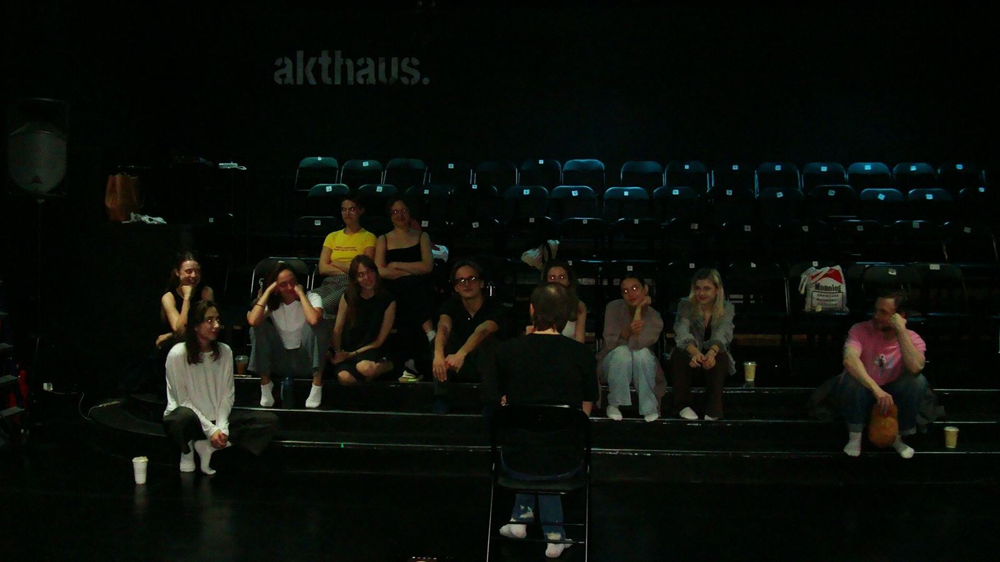

Пять вариантов, сверху вниз. Фирменный синий #002FA7 на чёрном получается тёмным: красиво, но читается хуже. Светлый синий виден лучше, но это уже не точный фирменный цвет.
студия 505
Самый контрастный, читается лучше всего.
студия 505
Как в посте студии с синим «505». Глубокий, но тёмный: на телефоне на солнце может потеряться.
студия 505
Читается так же уверенно, как белый, при этом синий.

Г · фирменный синий на затемнённом фотостудия 505
Почти сливается с тёмным полом.
студия 505
Видно и на фото.